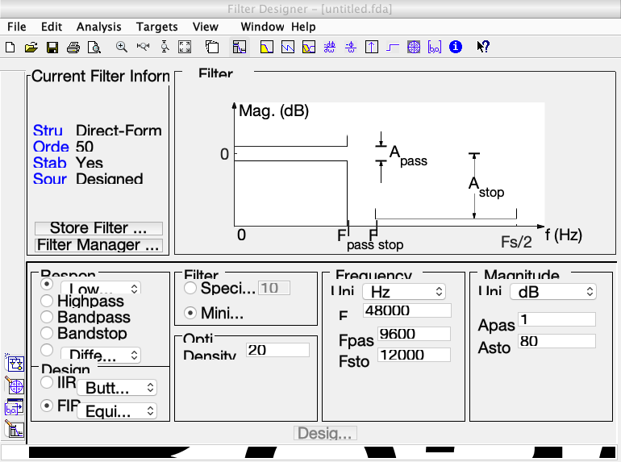

clear; close all; clc;
dat = readtable('seis.dat');
N = 5000;
dat = dat(1:N,:);
Fs = 100;
t = (0:1/Fs:(N-1)/Fs)';
NS=table2array(dat(:,1));
EW=table2array(dat(:,2));
UD=table2array(dat(:,3));
digFilt1 = designfilt('lowpassiir', 'PassbandFrequency', 20, 'StopbandFrequency', 25, 'PassbandRipple', 1, 'StopbandAttenuation', 60, 'SampleRate', 100);
digFilt2 = designfilt('lowpassfir', 'PassbandFrequency', 20, 'StopbandFrequency', 25, 'PassbandRipple', 1, 'StopbandAttenuation', 60, 'SampleRate', 100);
NS_filt = filter(digFilt1, NS);
EW_filt = filter(digFilt1, EW);
UD_filt = filter(digFilt1, UD);
NS_filtfilt = filtfilt(digFilt1, NS);
EW_filtfilt = filtfilt(digFilt1, EW);
UD_filtfilt = filtfilt(digFilt1, UD);
Nr = 1;
Dr = [1 -1];
UD_v = filter(Nr, Dr, detrend(UD_filtfilt))/Fs;
NS_v = filter(Nr, Dr, detrend(NS_filtfilt))/Fs;
EW_v = filter(Nr, Dr, detrend(EW_filtfilt))/Fs;
UD_p = filter(Nr, Dr, UD_v)/Fs;
NS_p = filter(Nr, Dr, NS_v)/Fs;
EW_p = filter(Nr, Dr, EW_v)/Fs;
plot(t,UD_p);
hold on;
plot(t,NS_p);
plot(t,EW_p);
legend('Vertical','N-S','E-W');
figure();
plot3(NS_p,EW_p,UD_p);
grid;
big;
